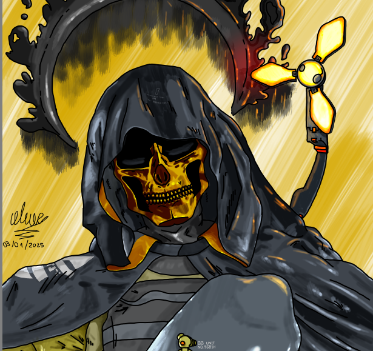

Vista frontal y trasera de un personaje para un juego low poly. Vista frontal, trasera y lateral de un enemigo para un juego low poly. Sketch de personaje hecho en krita  Ilustración de personaje de Death Stranding.